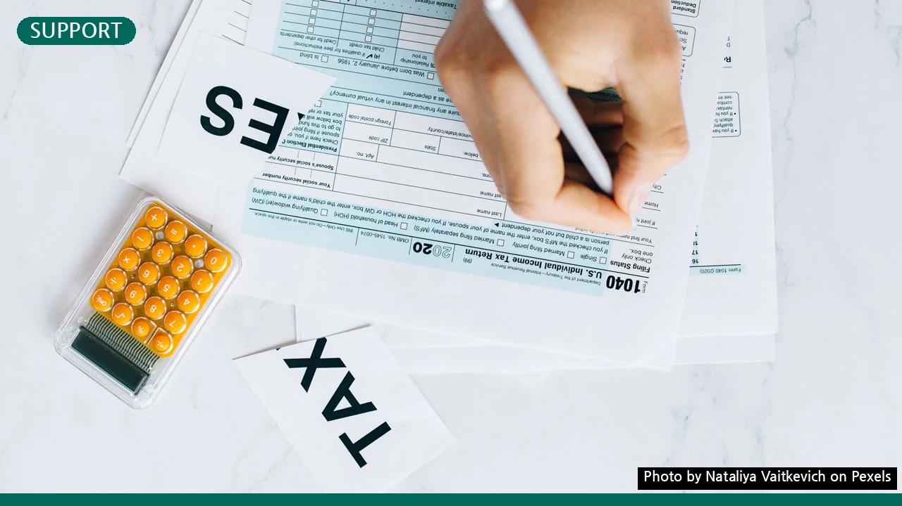

놓치면 손해! 2026년 근로장려금 신청 조건, 3분 만에 확인하세요
사진: Nataliya Vaitkevich / Pexels (무료 이미지, 출처 표기)
근로장려금, 나도 받을 수 있을까?
근로장려금은 소득이 적어 생활이 어려운 근로자 또는 사업자 가구에 근로를 장려하고 실질 소득을 지원하기 위해 국가가 지급하는 제도입니다. 매년 많은 분이 신청하지만, 생각보다 복잡한 조건 때문에 자격이 있음에도 놓치거나 신청 과정에서 어려움을 겪기도 합니다. 2026년 8월 현재 기준으로, 근로장려금 신청을 위해 가장 먼저 확인해야 할 핵심 자격 요건들을 명확하게 정리해 드립니다.
지금부터 제시하는 체크리스트를 통해 본인이 근로장려금 수급 대상에 해당하는지 쉽고 빠르게 확인하고, 다음 행동을 결정하는 데 도움을 받아보세요.
2026년 근로장려금: 가구 유형별 소득 기준 완벽 정리
근로장려금 신청의 첫 번째이자 가장 중요한 조건은 바로 '소득'입니다. 가구 유형에 따라 소득 기준이 달라지므로 본인의 가구 형태를 정확히 파악하는 것이 중요합니다. 국세청에 따르면 가구원 구성에 따른 소득 기준은 아래와 같습니다.
- 단독가구: 배우자나 부양자녀, 70세 이상 직계존속이 없는 경우
- 홑벌이 가구: 배우자나 부양자녀 또는 70세 이상 직계존속이 있는 경우 (배우자의 총급여액 등이 300만원 미만이어야 함)
- 맞벌이 가구: 배우자의 총급여액 등이 300만원 이상인 경우 (배우자 포함 총급여액 등 기준)
2026년 8월 기준, 직전 연도(2025년) 부부 합산 총소득금액의 기준은 다음과 같습니다. (정확한 금액은 매년 발표되므로 신청 시점에 국세청 홈택스에서 재확인하는 것이 좋습니다.)
총소득금액은 근로소득, 사업소득, 종교인소득, 이자·배당·연금소득 등 모든 소득을 합산한 금액을 의미합니다. 소득이 이 기준을 초과하면 근로장려금 신청 대상에서 제외됩니다.
놓치면 안 될 재산 요건: 주택, 예금, 자동차까지
소득 요건과 함께 반드시 충족해야 할 조건은 '재산 요건'입니다. 2026년 8월 기준으로 가구원 모두가 소유하고 있는 재산의 합계액이 기준 금액 미만이어야 합니다. 주택, 토지, 건물, 예금, 유가증권, 자동차 등 모든 자산이 포함됩니다.
- 재산 합계액 기준: 2억 4천만원 미만 (2025년 6월 1일 기준)
여기서 중요한 점은 부채는 차감하지 않고 순수 재산 가액을 기준으로 한다는 것입니다. 또한, 재산 합계액이 1억 7천만원 이상 2억 4천만원 미만인 경우에는 근로장려금 산정액의 50%만 지급됩니다. 자산 규모가 크다면 미리 확인하여 불이익을 받지 않도록 주의해야 합니다.
신청 자격 제외 대상: 내가 여기에 해당될까?
다음과 같은 경우에는 소득 및 재산 요건을 충족하더라도 근로장려금 신청 대상에서 제외될 수 있습니다. 신청 전에 꼭 확인하세요.
- 대한민국 국적을 보유하지 않은 자 (단, 대한민국 국적자와 혼인했거나 부양자녀가 있는 경우 제외)
- 다른 거주자의 부양자녀인 경우
- 전문직 사업을 영위하는 자 (예: 변호사, 의사 등)
- 신청 당시 대한민국 입국일로부터 183일이 경과되지 않은 외국인
가족 관계나 직업의 특수성 등으로 인해 자격이 복잡해질 수 있으므로, 애매한 경우 국세청 홈택스 상담 또는 세무서 문의를 통해 정확한 정보를 얻는 것이 가장 확실합니다.
근로장려금 신청 절차와 필요 서류
근로장려금은 보통 정기 신청 기간(매년 5월)과 반기 신청 기간(상반기 9월, 하반기 3월)으로 나누어 신청할 수 있습니다. 2026년 근로장려금 정기 신청은 2027년 5월에 진행될 예정이며, 반기 신청은 2026년 9월(상반기)과 2027년 3월(하반기)에 진행됩니다. 이 글은 2026년 8월 기준입니다.
신청 방법은 크게 세 가지입니다.
- 홈택스 앱/웹사이트: 가장 보편적인 방법으로, 모바일 앱 또는 PC 웹사이트에서 안내에 따라 신청합니다.
- ARS 전화: 자동응답 시스템(1544-9944)을 통해 신청할 수 있습니다.
- 세무서 방문: 직접 세무서를 방문하여 도움을 받아 신청합니다.
필요 서류는 신청 대상 유형에 따라 달라지지만, 주로 소득 및 재산 증빙 서류가 요구됩니다. 국세청에서 보낸 안내문을 받았을 경우, 대부분의 정보가 사전에 채워져 있어 간편하게 신청할 수 있습니다. 안내문을 받지 못했더라도 홈택스에서 본인 인증 후 신청이 가능합니다.
신청 전 꼭 확인해야 할 주의사항 및 추가 팁
근로장려금 신청 시 몇 가지 주의할 점을 미리 알아두면 불필요한 번거로움을 피할 수 있습니다.
- 기한 후 신청: 정기 신청 기간을 놓쳤다면 기한 후 신청을 할 수 있지만, 장려금의 90%만 지급되므로 정기 신청 기간 내에 접수하는 것이 가장 유리합니다.
- 정확한 정보 입력: 소득이나 재산 정보를 허위로 입력할 경우, 장려금이 환수될 수 있으며 향후 2년간 근로장려금 지급이 제한될 수 있습니다. 모든 정보는 사실에 근거하여 정확하게 기재해야 합니다.
- 반기 신청 vs 정기 신청: 근로장려금은 반기별로 신청하거나 정기 신청을 할 수 있습니다. 반기 신청은 소득 변동이 잦은 경우 유리하며, 지급액을 일찍 받을 수 있다는 장점이 있습니다. 자신에게 맞는 신청 방식을 선택하는 것이 좋습니다.
- 근로장려금은 상속 대상: 혹시 신청자가 사망한 경우에도 상속인이 장려금을 신청할 수 있습니다. 이 경우 상속개시일이 속하는 달의 말일부터 3개월 이내에 신청해야 합니다.
근로장려금은 어려운 시기에 실질적인 도움이 될 수 있는 소중한 지원 제도입니다. 위 체크리스트를 꼼꼼히 확인하시어 놓치지 않고 혜택을 받으시길 바랍니다. 정확한 사항은 국세청 홈택스 공식 홈페이지(www.hometax.go.kr) 또는 국세청 상담센터를 통해 다시 한번 확인하시길 권장합니다.
🔗 이 글도 함께 보면 좋아요: 청년월세지원 놓치면 후회? 신청 조건부터 혜택까지 완벽 정리